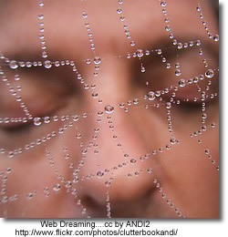

The "visible web" is what you see in the results pages from general web search engines. It's also what you see in almost all subject directories. The "invisible web" is what you cannot retrieve ("see") in the search results and other links contained in these types of tools. The invisible web is also referred to as the Deep Web .
There are many Web pages that can't be indexed, or information that's available via the Web but isn't accessible by the search engines. This is the stuff of the Invisible Web.Why can't some pages be indexed? The most basic reason is that there are no links pointing to a page that a search engine spider canfollow. Or, a page may be made up of data types that search engines don't index - graphics, CGI scripts, Macromedia flash or PDF files, for example.
But the biggest part of the Invisible Web is made up of information stored in databases. When an indexing spider comes across a database, it's as if it has run smack into the entrance of a massive library with securely bolted doors. Spiders can record the library's address, but can tell you nothing about the books, magazines or other documents it contains. From The Invisible Web by Chris Sherman.
Getting in Deep: Finding the Deep Web When You Need It by Jamie Mckenzie of FNO .
While the Deep Internet provides the most reliable information for many topics, it can do little good for those who do not consult it because it is unknown to them.
Take Kids Deep Inside Where the Deep Web Hides - an excellent post by Vicki Davis which articulates how she intends to expose her students to the deep web.
Beyond Google: The Invisible Web - FAQ's
Invisible or Deep Web: What it is, Why it exists, How to find it, and Its inherent ambiguity - a tutorial. - an excellent collection of tools to search the invisible web.
Search Tools for the Invisible Web
Chat Room: The Invisible Web - How to find the hidden resources that most search tools skip over.
Research Beyond Google: 119 Authoritative, Invisible, and Comprehensive Resource
Librarians Internet Index - a searchable, annotated subject directory of more than 11,000 Internet resources selected and evaluated by librarians for their usefulness to users of public libraries.
Complete Planet
70,000+ searchable databases and specialty search engines.
Infomine Multiple Database Search - an "academic" search engine, focusing on scholarly resource collections, electronic journals and books, online library card catalogs, and directories of researchers. Unlike many Invisible Web search tools, Infomine allows simultaneous searching of multiple databases.
Scirus - a science search engine dedicated to only searching science-specific content. At the time of this writing, Scirus searches over 250 million science-specific web pages, filtering out those results that are not science related in order for you, the user, to quickly pinpoint what it is that you're looking for.
Canadian Search Tools for the Invisible Web
Using Google to Search the Invisible Web
If your students are going to use Google they can use it to locate searchable databases by searching a subject term and the word "database". If the database uses the word database in its own pages, you are likely to find it in Google and it is more likely to contain information that is useful to your students
For example a search for the terms minerals + "data base" turned up two great data base resources without the commercial minerals resources.
(From: Deep Inside the Invisible Web )